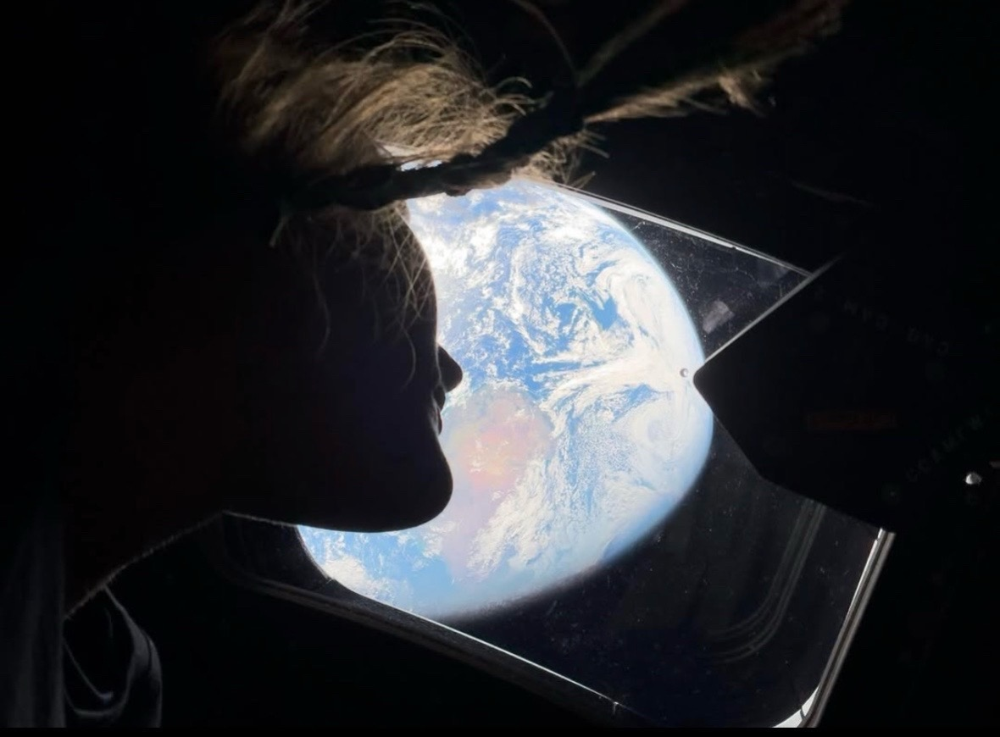
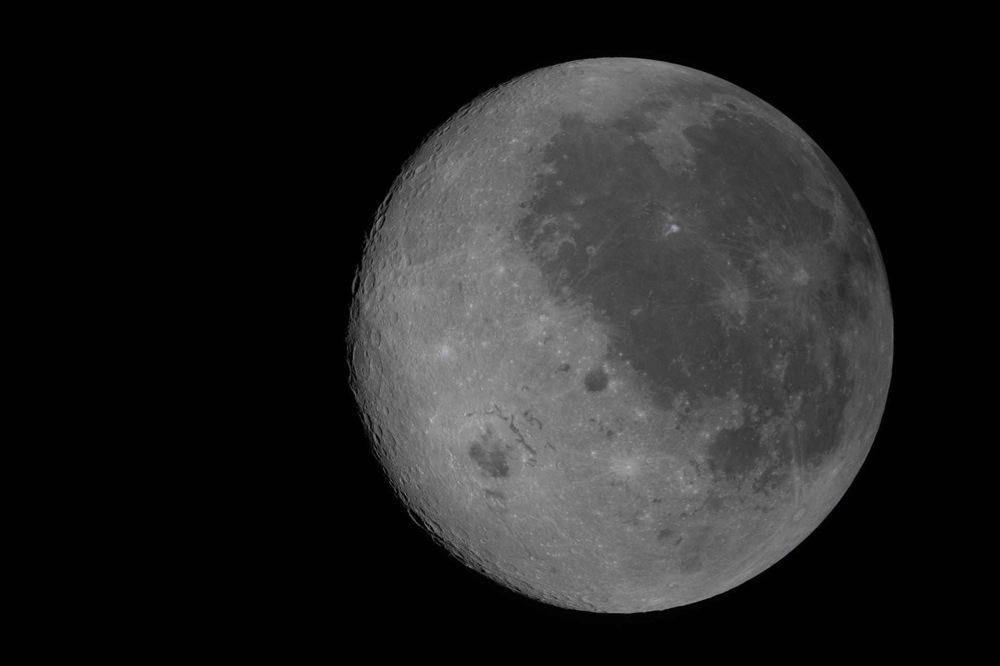

I am so geeked about space right now. It makes me feel hope for the future and humanity. Everything from watching the launch, talking to my coworkers about it, and all the cool art I've seen on Twitter; it just gives me a warm feeling!
There's a lot of not so great things going on in the world right now and honestly feeling good about anything is kind of hard.

But whenever I look up to the moon, knowing that there are four of us all the way up there, it makes me smile.